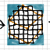
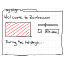
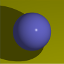
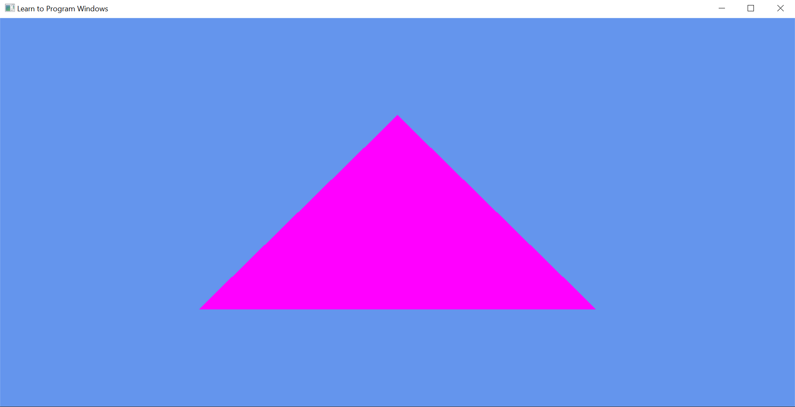

|
| Amazon Kindle |
| ePub and MOBI format at itch.io |
Hi! I really enjoyed learning the latest OpenGL shader programming, but it's actually not easy to get into. I've had quite a lot of teaching experience in different places and enjoy breaking down the difficult concepts and helping people with the various common problems that trip you up with the API. I host some my tutorials here, which I add to now and again. I have also written a much larger book of OpenGL tutorials, which you can get on Itch and Amazon.
Contents
Here you'll find the basic concepts to get you started, and you can see if you like my teaching style or not. Some of these tutorials are reproduced as part of my book.
| "Hello Triangle" | Minimal code to draw a triangle using simple shaders and vertex buffers. | |
| Extended Initialisation | Specifying OpenGL version, configuring the display, getting driver information, extension handling with GLEW, and adding a frames-per-second counter. | |
|  | Shaders | Shaders determine the style of rendering. |
| Vertex Buffer Objects | Vertex buffer objects hold the mesh data to render on the graphics hardware. We add a vertex buffer with colours to our triangle and show vertex-fragment interpolation. | |
| New! Hot Reloading Shaders | Being able to edit your shader code and see what visually changes, live, without restarting your program, is really handy. It's also a lot more fun, and you'll get nicer-looking shaders out as a result! | |
| Ray-Based Picking | Cast rays from mouse pointer to various primitive "bounding" shapes. | |
| Cube Maps: Sky Boxes and Environment Mapping | Look at using GL cube maps for sky boxes, and environment-mapping reflection and refraction effects. | |
| Morph Target Animation | Using interpolation between animation "targets". AKA "blend shapes". | |
|  | WebGL Starter | Moving into WebGL. |
|  | It's More Fun to Compute | Introduction to compute shaders and ray traced rendering. |
|  | Direct3D 11 Hello Triangle | [Not OpenGL] Getting started guide for using the Microsoft Direct3D 11 API. |
| Topics | Table of Contents |
| Formats | MOBI (Kindle + Amazon's online reader), EPub (most devices + desktop apps) |
| Page Count | 454 approx. (varies with device) |
| Word Count | 111,000 |
| Source Code | 40 demonstration programmes with Makefiles for Windows, Linux, OS X |
| Illustrations | Full-colour hand-drawn diagrams and screen-captures |
| Edition | 4 (all future updates are free) |
| Errata | Errata and Change Log |
| Notable For | Troubleshooting, tips and tricks chapters, tested on students, cheapest OpenGL book by far. |
The version on Itch.io has DRM-free .epub and .mobi which has support for the most devices and software. The Amazon version is DRM .mobi so will only work on the Kindle, the Kindle App, or Amazon's web reader. Itch give me a better return, have more flexible payment options, and you are supporting the little guy.
If you'd like to request I publish on a different platform, or think that it would be worthwhile making a print version, let me know.
All of the source code required can be found in snippets in the tutorials. I go to great pains not to refer to any custom code framework, and use minimal third-party libraries. Sometimes just having a working project to compare against is a relief. You can find a repository of demo code for my book on GitHub.
Dr Aidan Delaney at the University of Brighton has made an SDL2-based fork of the source code for graphics in the Computer Science (Games) BSc (Hons) programme. SDL2 replaces GLFW3 as the main helper library in this fork.
I just finished writing a game using many of these techniques. Readers often ask me how to manage or structure OpenGL elements at scale in a larger project. You can get it, with all the source code,from:
If you spot an error, omission, or typo, please let me know! I occasionally write about small, experimental, work on my blog. I consciousness-dump and re-tweet various graphics, game development and programming things on Twitter.

Dr Anton Gerdelan